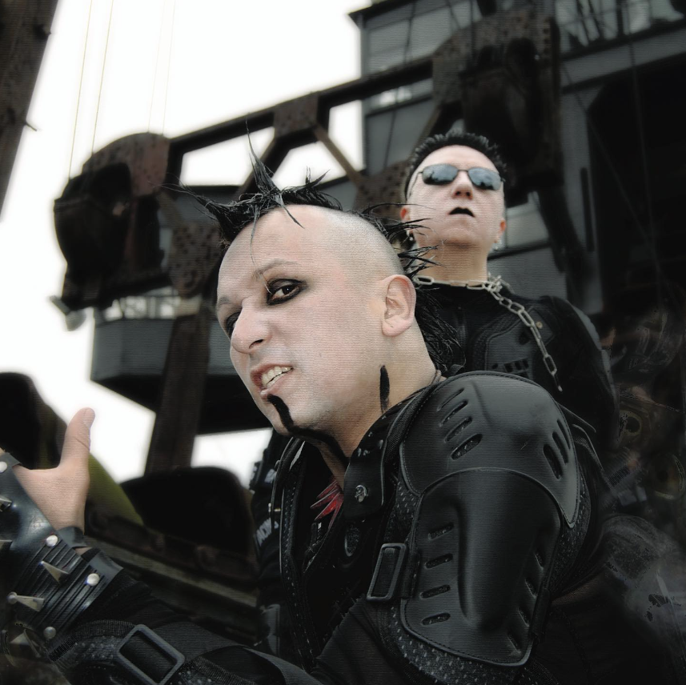
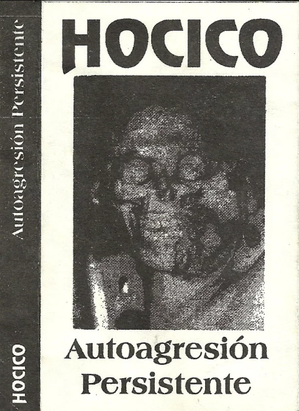

HOCICO : THE MASTERS OF MEXICAN INDUSTRIAL-ELECTRO
23 March 2024

Hocico is a Mexican band classified as Industrial-Electro, Dark Electro, Electro-Metal, Aggrotech, or Electronic Pop-Rock consisting of Erk Aicrag on vocals and Racso Agroyam on programming.
The duo has around twenty albums and EPs to its name, and has performed extensively internationally, including an appearance on The Black Bible compilation.
Hocico has developed a distinctive sound that genre specialists consider to be one of the benchmarks of the Aggrotech style.
Delving into the darkest depths of Industrial-Electro music, Hocico stands as a titan in the Mexican and international musical landscape. Formed in Mexico City in the late 1990s,
this iconic duo embodies a unique fusion of sonic brutality and emotional expression.
Their music is a symphony of merciless beats, haunting synthesizers and abrasive vocals. Albums such as “Sangre Hirviente” and “Tierra Electrica” testify to their ability
to create dystopian soundscapes that transport listeners into a parallel world of darkness and mystery.
As teenagers, the two cousins, Erik Garcia (Erk Aicrag) and Oscar Mayorga (Racso Agroyam), were influenced by Skinny Puppy and bands on the Wax Trax label. In 1989,
they embarked on a project they called Niñera Degenerada.
the project was unfortunately abandoned in 1992. That same year, they embarked on a new concept. Hocico de Perro (“dog nose” in Spanish) was born (the name was later shortened to Hocico).
Following a few small concerts, the band, still relatively unknown, nevertheless began to rise, playing gig after gig, gaining notoriety and reputation within the small circle of underground music.
In 1994, a guitarist made his appearance, but due to a musical incompatibility with Hocico’s style, he left the group after just one month.
The release of the demo cassette “Autoagresion Persistente” (1994) marked the beginning of the band’s ascent. The musical foundations were laid, revealing music that was heavy, deeply dark,
melodic and electronic, accompanied by vocals that were already following in the footsteps of Industrial-Electro greats such as Wumpscut and Suicide Commando.

Finally, in 1997, Hocico reached its peak with the release of the album “Odio Bajo El Alma”, distributed by the Mexican label Opción Sónica and in Europe by Out of Line.
The album met with remarkable success, hailed by specialist critics as a major breakthrough in the Mexican electronic music scene, thanks to its original composition and innovative character.
Continuing in this vein, Hocico multiplies productions and concerts around the world. At the same time, a parallel project initiated by Racso, Dulce Liquido,
was born in 2000. Although it shared some similarities with Hocico, this project was distinguished by a noisier, heavier and more aggressive tendency, with lyrics in Spanish,
unlike Hocico, which remained predominantly English-speaking. Likewise, Erk decided to follow suit with the launch
of Rabia Sorda in 2003, a project which, while sharing also similarities with Hocico, was slightly less aggressive and noisy.
Dulce Liquido by Racso Agroyam
Rabia Sorda by Erk Aicrag
Since its beginnings on the underground scene, Hocico has never stopped exploring new musical horizons. Its overall style is marked by a dark and aggressive tone, a nightmarish atmosphere,
dynamic and energetic melodies, and a sharp social critique of the violent world of Mexican society and human nature. The band members attribute this aggressiveness to their youthful
experiences and life in tumultuous Mexico City.
Twenty years later, the same approach continues with the single “A Symphony Of Rage” (2023), which testifies to resistance in the face of the omnipresent violence on the streets of Mexico.
Beyond their distinctive musical signature, Hocico is renowned for its commitment to authenticity and artistic expression. Their lyrics, often tinged with dark, introspective themes,
plumb the abyss of the human soul, exploring subjects such as pain, revolt and resilience. The band challenges established norms and ardently defends freedom of expression with an all-consuming passion.
On stage, Hocico impose their presence with force. Their raw energy and magnetic charisma ignite crowds around the world, creating a deep connection between artists and audiences.
Their fiery performances celebrate individuality and demonstrate music’s ability to transcend cultural and social boundaries.
In conclusion, Hocico stands out as an essential entity in the Industrial-Electro musical landscape. Through two decades of sonic exploration and artistic commitment, the band has forged a
singular identity marked by a dark, provocative aesthetic. Their music, imbued with raw energy and emotional depth, transcends cultural boundaries to touch the souls of listeners around the world.
Beyond their musical impact, Hocico embody a spirit of resilience and rebellion, challenging norms and inspiring a generation of followers to follow their own path with courage and determination.
With their indelible legacy and lasting influence, Hocico remains a pillar of the Industrial-Electro, Aggrotech, Dark-Electro scene, a constant reminder of the power of music to transform and transcend.